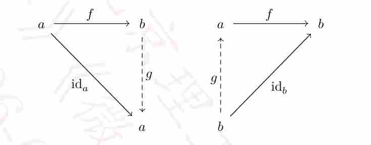

CATEGORY THEORY
4 CATEGORY THEORY | 范畴论
4.1 Categories | 范畴
Category theory is an appropriate setting where to discuss an age-old question.
4.1.0.1 Question: When are two objects really the same?
[点击展开翻译]
问题： 两个对象何时才是真正的“相同”？The concept of “sameness” being a special kind of relationship means that objects are the same if there is a particular morphism between them. How we talk about sameness is at the heart of category theory. We take Wittgenstein’s (1922) critique, roughly speaking, to say of two things that they are identical is nonsense, and to say of one thing that it is identical with itself is to say nothing at all as an invitation to ask for less, namely isomorphic (or uniquely isomorphic) objects, rather than identical objects. In this chapter, which is mostly adapted from [9, Chapter I], we will give the formal definition of a category along with several examples.
[点击展开翻译 - 正文部分]
“相同性”的概念作为一种特殊的关系，意味着如果对象之间存在某种特定的态射，那么它们就是相同的。我们如何讨论相同性是范畴论的核心。我们采纳维特根斯坦（1922）的批判，粗略地说，认为两个事物是恒等的是无意义的，而说一个事物与其自身恒等则什么也没表达；这启发我们去追求更弱的条件，即同构（或唯一同构）的对象，而非完全恒等的对象。在本章（主要改编自 [9, 第一章]）中，我们将给出范畴的正规定义以及若干示例。4.1.1 Metacategories | 元范畴
First we describe categories directly by means of axioms, without using any set theory, and call them “metacategories”. Actually, we begin with a simpler notion, a metagraph.
[点击展开翻译]
首先，我们直接通过公理而不使用任何集合论来描述范畴，并称之为“元范畴”。实际上，我们从一个更简单的概念——元图（metagraph）开始。4.1.1.1 Metagraphs | 元图
Metagraphs: A metagraph consists of objects \(a, b, c, \dots\), morphisms (or arrows) \(f, g, h, \dots\), and two operations, as follows:
- Domain, which assigns to each morphism \(f\) an object \(a = \text{dom } f\);
- Codomain, which assigns to each morphism \(f\) an object \(b = \text{cod } f\).
[点击展开翻译 - 浅绿定义块]
元图： 一个元图由对象 \(a, b, c, \dots\)，态射（或称箭头） \(f, g, h, \dots\) 以及以下两种操作组成：
- 定义域（Domain）：为每个态射 \(f\) 指定一个对象 \(a = \text{dom } f\)；
- 陪域（Codomain）：为每个态射 \(f\) 指定一个对象 \(b = \text{cod } f\)。
These operations on \(f\) are indicated by displaying \(f\) as an actual morphism starting at its domain (or source) and ending at its codomain (or target) as \[f: a \to b \quad \text{or} \quad a \xrightarrow{f} b.\]
[点击展开翻译]
针对 \(f\) 的这些操作通过将 \(f\) 展示为一个从其定义域（或称源）开始并终止于其陪域（或称靶）的实际态射来表示： \[f: a \to b \quad \text{或} \quad a \xrightarrow{f} b。\]4.1.1.2 Metacategories | 元范畴
4.1.1.2 Metacategories: A metacategory is a metagraph with two additional operations as:
- Identity, which assigns to each object \(a\) a morphism \(\text{id}_a : a \to a\);
- Composition, which assigns to each pair \((g, f)\) of morphisms with \(\text{dom } g = \text{cod } f\) a morphism \(g \circ f : \text{dom } f \to \text{cod } g\), called their composite.
These operations in a metacategory are subject to the two following axioms as:
- Associativity. For given objects and morphisms in the configuration \[a \xrightarrow{f} b \xrightarrow{g} c \xrightarrow{h} d, \quad \] one always has the equality \(h \circ (g \circ f) = (h \circ g) \circ f\).
- Unit law. For all morphisms \(f : a \to b\) and \(g : b \to c\) composition with the identity morphism \(\text{id}_b\) gives \(\text{id}_b \circ f = f\) and \(g \circ \text{id}_b = g\).
[点击展开翻译]
4.1.1.2 元范畴： 一个 元范畴 是一个带有如下两种额外运算的元图：
- 恒等运算：为每个对象 \(a\) 指定一个态射 \(\text{id}_a : a \to a\)；
- 复合运算：为每一对满足 \(\text{dom } g = \text{cod } f\) 的态射 \((g, f)\) 指定一个态射 \(g \circ f : \text{dom } f \to \text{cod } g\)，称为它们的复合态射。
4.1.1.3 Proposition: For any object \(a\), the identity morphism \(\text{id}_a\) is unique.
Proof: If \(\text{id}'_a : a \to a\) is another identity morphism, then \(\text{id}'_a = \text{id}_a \circ \text{id}'_a = \text{id}_a\). ■
[点击展开翻译]
4.1.1.3 命题： 对于任何对象 \(a\)，恒等态射 \(\text{id}_a\) 是唯一的。
证明： 若 \(\text{id}'_a : a \to a\) 是另一个恒等态射，则有 \(\text{id}'_a = \text{id}_a \circ \text{id}'_a = \text{id}_a\)。■4.1.1.4 The metacategory of sets: The metacategory of sets has all sets as objects and all maps between sets as morphisms. The identity takes the identity map \(\text{id}_X : X \to X, p \mapsto p\) at each set \(X\), and the composition is the composition of maps.
[点击展开翻译]
4.1.1.4 集合元范畴： 集合元范畴以所有集合为对象，以集合之间的所有映射为态射。恒等运算在每个集合 \(X\) 上取 恒等映射 \(\text{id}_X : X \to X, p \mapsto p\)，而复合运算即映射的复合。Note that, in any compatible set theory, such as Zermelo–Fraenkel set theory, there is no set of all sets, to avoid the Russell’s paradox. Russell found in Frege’s earlier axiomatic system of set theory a paradox that demonstrated an inconsistency in it. In Frege’s system there is an unrestricted comprehension principle that, given any condition expressible by a predicate \(P(X)\) on any set \(X\), there is a set of all sets meeting that condition, denoted by \(\{X : P(X)\}\). This principle is the cause of the inconsistency. Instead, we shall call the class of all sets instead. In general, a metacategory has a class of objects and a class of morphisms, not sets.
[点击展开翻译]
请注意，在任何相容的集合论（如 Zermelo–Fraenkel 集合论）中，为了避免罗素悖论，并不存在“所有集合的集合”。罗素在弗雷格早期的集合论公理体系中发现了一个悖论，证明了该体系的不自洽性。在弗雷格的体系中存在一个无限制概括原则，即给定任何可在集合 \(X\) 上由谓词 \(P(X)\) 表达的条件，都存在一个由满足该条件的所有集合组成的集合，记作 \(\{X : P(X)\}\)。这一原则是不自洽性的根源。相反，我们应将其称为所有集合的 类 (class)。通常情况下，一个元范畴拥有一类对象和一类态射，而非集合。4.1.1.5 Russell’s paradox: There is no set of all non-self-membered sets.
[点击展开证明]
Proof: Suppose there is one, denoted by \(\mathcal{R} = \{X \text{ is a set} : X \notin X\}\). Then either \(\mathcal{R} \in \mathcal{R}\) or \(\mathcal{R} \notin \mathcal{R}\). If \(\mathcal{R} \in \mathcal{R}\), then by the construction of \(\mathcal{R}\) we have \(\mathcal{R} \notin \mathcal{R}\). If \(\mathcal{R} \notin \mathcal{R}\) , then by the construction of \(\mathcal{R}\) we have \(\mathcal{R} \in \mathcal{R}\). Either way leads to a contradiction. ■[点击展开翻译]
4.1.1.5 罗素悖论： 不存在由所有不属于自身的集合构成的集合。
证明： 假设存在这样一个集合，记作 \(\mathcal{R} = \{X \text{ 是一个集合} : X \notin X\}\)。那么要么 \(\mathcal{R} \in \mathcal{R}\)，要么 \(\mathcal{R} \notin \mathcal{R}\)。若 \(\mathcal{R} \in \mathcal{R}\)，根据 \(\mathcal{R}\) 的构造可知 \(\mathcal{R} \notin \mathcal{R}\)。若 \(\mathcal{R} \notin \mathcal{R}\)，根据 \(\mathcal{R}\) 的构造可知 \(\mathcal{R} \in \mathcal{R}\)。无论哪种情况都会导致矛盾。■4.1.3 Categories | 范畴
A category is meant by any interpretation of the category axioms within set theory, as distinguished from a metacategory. To avoid the foundational problems in set theory, we shall assume that there is a big enough set \(\mathcal{U}\), called the universe satisfying certain closedness properties.
[点击展开翻译]
范畴是指在集合论框架内对范畴公理的任何解释，以此与元范畴相区分。为了避免集合论中的基础性问题，我们应当假设存在一个足够大的集合 \(\mathcal{U}\)，称为宇宙（universe），它满足特定的封闭性性质。4.1.3.1 Universes: A universe is a set \(\mathcal{U}\) such that * \(x \in u \in \mathcal{U}\) implies \(x \in \mathcal{U}\); * \(u \in \mathcal{U}\) and \(v \in \mathcal{U}\) imply that \(\{u, v\}, (u, v), u \times v \in \mathcal{U}\); * \(x \in \mathcal{U}\) implies \(\mathcal{P}x \in \mathcal{U}\) and \(\bigcup x \in \mathcal{U}\); * \(\mathbb{N}_0 \in \mathcal{U}\); * if \(f : a \to b\) is a surjection with \(a \in \mathcal{U}\) and \(b \subseteq \mathcal{U}\), then \(b \in \mathcal{U}\).
[点击展开翻译]
4.1.3.1 宇宙： 宇宙是一个满足以下条件的集合 \(\mathcal{U}\)：
- \(x \in u \in \mathcal{U}\) 蕴含 \(x \in \mathcal{U}\)；
- \(u \in \mathcal{U}\) 且 \(v \in \mathcal{U}\) 蕴含 \(\{u, v\}, (u, v), u \times v \in \mathcal{U}\)；
- \(x \in \mathcal{U}\) 蕴含 \(\mathcal{P}x \in \mathcal{U}\) 且 \(\bigcup x \in \mathcal{U}\)；
- \(\mathbb{N}_0 \in \mathcal{U}\)；
- 若 \(f : a \to b\) 是满射，且 \(a \in \mathcal{U}, b \subseteq \mathcal{U}\)，则 \(b \in \mathcal{U}\)。
In particular, if \(X, Y \in \mathcal{U}\), then any relation from \(X\) to \(Y\), including any map \(f : X \to Y\), belongs to \(\mathcal{U}\).
[点击展开翻译]
特别地，若 \(X, Y \in \mathcal{U}\)，则从 \(X\) 到 \(Y\) 的任何关系（包括任何映射 \(f : X \to Y\)）都属于 \(\mathcal{U}\)。4.1.3.2 Small sets: A set \(X\) is small if it is a member of the universe \(\mathcal{U}\); it is large if it is not a member of \(\mathcal{U}\).
[点击展开翻译]
4.1.3.2 小集合： 若集合 \(X\) 是宇宙 \(\mathcal{U}\) 的一个元素，则称其为 小集合；若它不是 \(\mathcal{U}\) 的元素，则称其为 大集合。We use the word class instead of set for the collections of objects and morphisms in a category because in some categories they are “too large” to be considered sets.
[点击展开翻译]
我们对范畴中对象和态射的汇集使用“类（class）”而非“集合”一词，是因为在某些范畴中，它们的规模“太大”以至于不能被视为集合。4.1.3.3 Directed graphs: A directed graph is a quadruple \(\mathsf{C} = (O, A, \text{dom}, \text{cod})\) where \(O\) is a set of objects, \(A\) is a set of morphisms, and two functions \(\text{dom}, \text{cod} : A \to O\). In this graph, the set of composable pairs of morphisms is the set \[A \times_O A = \{ (g, f) : g, f \in A \wedge \text{dom } g = \text{cod } f \}. \quad (24)\]
[点击展开翻译]
4.1.3.3 有向图： 有向图是一个四元组 \(\mathsf{C} = (O, A, \text{dom}, \text{cod})\)，其中 \(O\) 是对象的集合，\(A\) 是态射的集合，以及两个函数 \(\text{dom}, \text{cod} : A \to O\)。在此图中，可复合态射对的集合为 \[A \times_O A = \{ (g, f) : g, f \in A \wedge \text{dom } g = \text{cod } f \}。 \quad (24)\]4.1.3.4 Categories: A category is a graph \(\mathsf{C} = (O, A, \text{dom}, \text{cod})\) with two maps \[ \begin{aligned} \text{id} : O \to A, & \quad \circ : A \times_O A \to A, \\ c \mapsto \text{id}_c, & \quad (g, f) \mapsto g \circ f, \end{aligned} \quad (25) \] called the identity and the composition, such that \[\text{dom id}_a = \text{cod id}_a = a, \text{dom}(g \circ f) = \text{dom } f, \text{cod}(g \circ f) = \text{cod } g \quad (26)\] for all objects \(a \in O\) and all composable pairs of morphisms \((g, f) \in A \times_O A\), and such that the associativity and unit axioms in Definition 4.1.1.2 hold.
[点击展开翻译]
4.1.3.4 范畴： 一个 范畴 是一个图 \(\mathsf{C} = (O, A, \text{dom}, \text{cod})\)，并带有两个映射： \[ \begin{aligned} \text{id} : O \to A, & \quad \circ : A \times_O A \to A, \\ c \mapsto \text{id}_c, & \quad (g, f) \mapsto g \circ f, \end{aligned} \quad (25) \] 分别称为 恒等 和 复合，使得对于所有对象 \(a \in O\) 以及所有可复合态射对 \((g, f) \in A \times_O A\)，均满足： \[\text{dom id}_a = \text{cod id}_a = a, \text{dom}(g \circ f) = \text{dom } f, \text{cod}(g \circ f) = \text{cod } g \quad (26)\] 且满足定义 4.1.1.2 中的结合律与单位元公理。In treating a category \(\mathsf{C}\), we usually drop the letters \(A\) and \(O\), and write \(c \in \mathsf{C}\) for \(c\) being an object of \(\mathsf{C}\) and \(f \in \mathsf{C}\) for \(f\) being a morphism of \(\mathsf{C}\). A category is distinguished from [a metacategory] in that the classes of objects and morphisms are actually sets.
[点击展开翻译]
在处理范畴 \(\mathsf{C}\) 时，我们通常省略字母 \(A\) 和 \(O\)，用 \(c \in \mathsf{C}\) 表示 \(c\) 是 \(\mathsf{C}\) 的一个对象，用 \(f \in \mathsf{C}\) 表示 \(f\) 是 \(\mathsf{C}\) 的一个态射。范畴与元范畴的区别在于，前者的对象类和态射类实际上是 集合。4.1.3.5 Hom-sets: For objects \(a\) and \(b\) in a category \(\mathsf{C}\) the hom-set \[\mathsf{C}(a, b) = \{ f \in \mathsf{C} : a \to b \} \quad (27)\] consists of all morphisms of the category with domain \(a\) and codomain \(b\).
[点击展开翻译]
4.1.3.5 Hom-集： 对于范畴 \(\mathsf{C}\) 中的对象 \(a\) 和 \(b\)，hom-集 \[\mathsf{C}(a, b) = \{ f \in \mathsf{C} : a \to b \} \quad (27)\] 由该范畴中所有以 \(a\) 为定义域、以 \(b\) 为陪域的态射组成。4.1.3.6 Small and locally small categories: A category is small if it has a small set of objects and a small set of morphisms; it is large if the set of objects or morphisms is large. A category is locally small if all of its hom-sets are small.
[点击展开翻译]
4.1.3.6 小范畴与局部小范畴： 若一个范畴的对象集合和态射集合都是小集合，则称其为 小范畴；若对象集合或态射集合是大集合，则称其为 大范畴。若一个范畴的所有 hom-集都是小集合，则称其为 局部小范畴。4.1.4 Examples of categories | 范畴示例
We list a few examples of small categories.
[点击展开翻译]
我们列举一些小范畴的例子。4.1.4.1 Some finite categories:
- 0 is the empty category (no objects, no morphisms);
- 1 is the category \(\circlearrowleft\) with one object and one identity morphism;
- 2 is the category \(\circlearrowleft \to \circlearrowleft\) with two objects \(a, b\), and just one morphism \(a \to b\) not the identity;
- 3 is the category with three objects whose non-identity morphisms are from one to any other;
- \(\downdownarrows\) is the category with two objects \(a, b\) and just two morphisms \(a \to b\) not the identity morphisms. We call two such morphisms parallel morphisms.
In each of the cases above there is only one possible definition of composition.
[点击展开翻译]
4.1.4.1 一些有限范畴：
- 0 是空范畴（无对象，无态射）；
- 1 是只有一个对象和其唯一恒等态射的范畴 \(\circlearrowleft\)；
- 2 是具有两个对象 \(a, b\) 且只有一个非恒等态射 \(a \to b\) 的范畴 \(\circlearrowleft \to \circlearrowleft\)；
- 3 是具有三个对象的范畴，其非恒等态射是从其中任意一个指向另一个；
- \(\downdownarrows\) 是具有两个对象 \(a, b\) 且只有两个非恒等态射 \(a \to b\) 的范畴。我们称这两个态射为 平行态射。
4.1.4.2 Discrete categories: A category is discrete when every morphism is an identity. Every set \(X\) is the set of objects of a discrete category, and every discrete category is determined by its set of objects. Thus, discrete categories are sets.
[点击展开翻译]
4.1.4.2 离散范畴： 当一个范畴的每个态射都是恒等态射时，称该范畴是离散的。每个集合 \(X\) 都是某个离散范畴的对象集，且每个离散范畴都由其对象集唯一确定。因此，离散范畴即是集合。4.1.4.3 Monoids: A monoid is a category with one object. Each monoid is determined by the set of all its morphisms with the identity morphism and the composition of morphisms. Since any two morphisms have a composite, a monoid is exactly a semigroup with identity element. For any category \(\mathsf{C}\) and any object \(a \in \mathsf{C}\), the set \(\mathsf{C}(a, a)\) of all morphisms \(a \to a\) with the composition is a monoid.
[点击展开翻译]
4.1.4.3 幺半群： 幺半群 是仅有一个对象的范畴。每个幺半群都由其所有态射的集合、恒等态射以及态射的复合运算所确定。由于任意两个态射都可复合，幺半群恰好是具有单位元的半群。对于任何范畴 \(\mathsf{C}\) 及其中的任何对象 \(a \in \mathsf{C}\)，所有态射 \(a \to a\) 的集合 \(\mathsf{C}(a, a)\) 在复合运算下构成一个幺半群。4.1.4.4 Groups: A group is a category with one object in which every morphism has an inverse under composition.
[点击展开翻译]
4.1.4.4 群： 群 是仅有一个对象，且其中每个态射在复合运算下都具有逆态射的范畴。4.1.4.5 Matrices: For each commutative ring \(R\), the set \(\text{Mat}_R\) of all \(R\)-matrices is a category; the set of objects is \(\mathbb{N}_0\), and each \(m \times n\) matrix \(A\) is regarded as a morphism \(A : n \to m\), with composition the matrix product.
[点击展开翻译]
4.1.4.5 矩阵： 对于每个交换环 \(R\)，所有 \(R\)-矩阵的集合 \(\text{Mat}_R\) 构成一个范畴；其对象集为 \(\mathbb{N}_0\)，每个 \(m \times n\) 矩阵 \(A\) 被视为一个态射 \(A : n \to m\)，复合运算为矩阵乘法。4.1.4.6 Sets: For each collection \(\mathcal{V}\) of sets, denote by \(\text{Ens}_{\mathcal{V}}\) the category with objects all sets \(X \in \mathcal{V}\), morphisms all maps \(f : X \to Y\), with the composition of maps.
[点击展开翻译]
4.1.4.6 集合： 对于每个集合汇集 \(\mathcal{V}\)，用 \(\text{Ens}_{\mathcal{V}}\) 表示这样一个范畴：其对象为所有集合 \(X \in \mathcal{V}\)，态射为所有映射 \(f : X \to Y\)，复合运算为映射的复合。4.2 Morphisms | 态射
In categorical treatments many properties ordinarily formulated by means of element can be done without elements.[点击展开翻译]
在范畴论的处理中，许多通常通过元素表述的性质都可以在不使用元素的情况下完成。4.2.0.1 Monomorphisms and epimorphisms: Let \(f: a \to b\) be a morphism in a category \(\mathsf{C}\); it is called
monic, or a monomorphism if it is left-cancellable, in the sense that \(f \circ g = f \circ h\) implies \(g = h\) for all morphisms \(g, h: d \to a\);
epic, or an epimorphism if it is right-cancellable, in the sense that \(g \circ f = h \circ f\) implies \(g = h\) for all morphisms \(g, h: b \to c\); or
a bimorphism if it is both left-cancellable and right-cancellable.
[点击展开翻译]
4.2.0.1 单态射与满态射： 设 \(f: a \to b\) 为范畴 \(\mathsf{C}\) 中的一个态射；它被称为：
单的 (monic)，或单态射 (monomorphism)，如果它是左可消的 (left-cancellable)，即对于所有态射 \(g, h: d \to a\)，\(f \circ g = f \circ h \implies g = h\)；
满的 (epic)，或满态射 (epimorphism)，如果它是右可消的 (right-cancellable)，即对于所有态射 \(g, h: b \to c\)，\(g \circ f = h \circ f \implies g = h\)；或
双态射 (bimorphism)，如果它既是左可消的又是右可消的。
4.2.0.2 Compositions of monomorphisms and epimorphisms: The composition of monomorphisms is a monomorphism. The composition of epimorphisms is an epimorphism. The composition of bimorphism is a bimorphism.
[点击展开翻译]
4.2.0.2 单态射与满态射的复合： 单态射的复合是单态射。满态射的复合是满态射。双态射的复合是双态射。4.2.0.3 Split monomorphisms and epimorphisms: Let \(f: a \to b\) be a morphism in a category \(\mathsf{C}\); it is called
a section, or a split monomorphism if it has a left inverse \(g: b \to a\), in the sense that \(g \circ f = \text{id}_a\);
a retraction, or a split epimorphism if it has a right inverse \(g: b \to a\), in the sense that \(f \circ g = \text{id}_b\); or
an isomorphism if it has both left and right inverses.
[点击展开翻译]
4.2.0.3 分裂单态射与分裂满态射： 设 \(f: a \to b\) 为范畴 \(\mathsf{C}\) 中的一个态射；它被称为：
截面 (section)，或分裂单态射 (split monomorphism)，如果它具有左逆 \(g: b \to a\)，使得 \(g \circ f = \text{id}_a\)；
收缩 (retraction)，或分裂满态射 (split epimorphism)，如果它具有右逆 \(g: b \to a\)，使得 \(f \circ g = \text{id}_b\)；或
同构 (isomorphism)，如果它既有左逆又有右逆。
4.2.0.4 Proposition: Let \(f: a \to b\) be a morphism in a category \(\mathsf{C}\) which has a left inverse \(g: b \to a\), and a right inverse \(h: b \to a\), then \(g = h\). Then they coincide and are unique.
[点击展开翻译]
4.2.0.4 命题： 设 \(f: a \to b\) 是范畴 \(\mathsf{C}\) 中的一个态射。若 \(f\) 具有左逆 \(g: b \to a\) 和右逆 \(h: b \to a\)，则 \(g = h\)。即它们重合且是唯一的。[点击展开证明]
Proof: Since \(g\) is a left inverse of \(f\) we have \(g \circ f = \text{id}_a\), and since \(h\) is a right inverse we have \(f \circ h = \text{id}_b\). Then by the unit law and the associativity of composition of morphisms, we have \(g = g \circ \text{id}_b = g \circ (f \circ h) = (g \circ f) \circ h = \text{id}_a \circ h = h\). If \(g_1\) is any other left inverse of \(f\), then we have \(g_1 = h = g\), and so the left inverse is unique. Same for the right inverse. ■4.2.0.5 Definition: Let \(f: a \to b\) be an isomorphism in a category \(\mathsf{C}\), then its unique left-and-right inverse is called the inverse of \(f\).
[点击展开翻译]
4.2.0.5 定义： 设 \(f: a \to b\) 是范畴 \(\mathsf{C}\) 中的一个同构，则其唯一的左右逆被称为 \(f\) 的逆 (inverse)。
4.2.0.6 Compositions of split monomorphisms and epimorphisms: The composition of sections is a section. The composition of retractions is a retraction. The composition of isomorphism is an isomorphism.
[点击展开翻译]
4.2.0.6 分裂单态射与分裂满态射的复合： 截面的复合是截面。收缩的复合是收缩。同构的复合是同构。4.2.0.7 Split monomorphisms and epimorphisms are monomorphisms and epimorphisms: A section is a monomorphism. A retraction is an epimorphism. An isomorphism is a bimorphism.
[点击展开翻译]
4.2.0.7 分裂单态射与满态射是单态射与满态射： 截面是单态射。收缩是满态射。同构是双态射。[点击展开证明]
Proof: Let \(f: a \to b\) be a section in \(\mathsf{C}\); then it has a left inverse \(g: b \to a\). Suppose that \(h_0, h_1: d \to a\) are morphisms in \(\mathsf{C}\) such that \(f \circ h_0 = f \circ h_1\), then \[h_0 = g \circ f \circ h_0 = g \circ f \circ h_1 = h_1, \tag{28}\] and \(f\) is left-cancellable and monic.
Let \(f: a \to b\) be a retraction in \(\mathsf{C}\); then it has a right inverse \(h: b \to a\). Suppose that \(g_0, g_1: b \to c\) are morphisms in \(\mathsf{C}\) such that \(g_0 \circ f = g_1 \circ f\), then \[g_0 = g_0 \circ f \circ h = g_1 \circ f \circ h = g_1, \tag{29}\] and \(f\) is right-cancellable and epic.
An isomorphism has both left and right inverses and is both left-cancellable and right-cancellable, and so is a bimorphism. ■4.2.0.8 Proposition: Let \(f: a \to b\) be a morphism in a category \(\mathsf{C}\). Then the following are equivalent:
\(f\) is a monomorphism and a retraction;
\(f\) is an epimorphism and a section; and
\(f\) is an isomorphism.
[点击展开翻译]
4.2.0.8 命题： 设 \(f: a \to b\) 为范畴 \(\mathsf{C}\) 中的一个态射。则以下各项等价：
\(f\) 是单态射且是收缩；
\(f\) 是满态射且是截面；
\(f\) 是同构。
[点击展开证明]
Proof: An isomorphism is a monomorphism, an epimorphism, a section, and a retraction. If \(f: a \to b\) is a monomorphism and a retraction, then there is a morphism \(g: b \to a\) such that \(f \circ g = \text{id}_b\). Composing \(f\) on the right, we have \(f \circ g \circ f = \text{id}_b \circ f = f = f \circ \text{id}_a\). Since \(f\) is left-cancellable, we have \(g \circ f = \text{id}_a\), and then \(g\) is the inverse of \(f\). If \(f: a \to b\) is an epimorphism and a section, then there is a morphism \(g: b \to a\) such that \(g \circ f = \text{id}_a\). Composing \(f\) on the left, we have \(f \circ g \circ f = f \circ \text{id}_a = f = \text{id}_b \circ f\). Since \(f\) is right-cancellable, we have \(f \circ g = \text{id}_b\), and then \(g\) is the inverse of \(f\). ■4.2.0.9 Extremal monomorphisms and epimorphisms: Let \(f: a \to b\) be a morphism in a category \(\mathsf{C}\); it is called
an extremal monomorphism if \(f\) is monic and for every morphism \(g: c \to b\) and every epimorphism \(h: a \to c\) if \(f = g \circ h\) then \(h\) is an isomorphism;
an extremal epimorphism if \(f\) is epic and for every morphism \(h: a \to c\) and every monomorphism \(g: c \to b\) if \(f = g \circ h\) then \(g\) is an isomorphism; or
an extremal bimorphism if it is both an extremal monomorphism and an extremal epimorphism.
[点击展开翻译]
4.2.0.9 极大单态射与极大满态射： 设 \(f: a \to b\) 为范畴 \(\mathsf{C}\) 中的一个态射；它被称为：
极大单态射 (extremal monomorphism)，如果 \(f\) 是单态射，且对于每一个态射 \(g: c \to b\) 和每一个满态射 \(h: a \to c\)，若 \(f = g \circ h\)，则 \(h\) 是同构；
极大满态射 (extremal epimorphism)，如果 \(f\) 是满态射，且对于每一个态射 \(h: a \to c\) 和每一个单态射 \(g: c \to b\)，若 \(f = g \circ h\)，则 \(g\) 是同构；或
极大双态射 (extremal bimorphism)，如果它既是极大单态射又是极大满态射。
4.2.0.10 Compositions of extremal monomorphisms and epimorphisms: The composition of extremal monomorphisms is an extremal monomorphism. The composition of extremal epimorphisms is an extremal epimorphism. The composition of extremal bimorphisms is an extremal bimorphism.
[点击展开翻译]
4.2.0.10 极大单态射与极大满态射的复合： 极大单态射的复合是极大单态射。极大满态射的复合是极大满态射。极大双态射的复合是极大双态射。4.2.0.11 Split monomorphisms and epimorphisms are extremal: A section is an extremal monomorphism. A retraction is an extremal epimorphism.
[点击展开翻译]
4.2.0.11 分裂单态射与分裂满态射是极大的： 截面是极大单态射。收缩是极大满态射。[点击展开证明]
Proof: Let \(f: a \to b\) be a section in \(\mathsf{C}\); then it has a left inverse \(g: b \to a\). Suppose that \(f = h \circ k\) and \(k\) is epic. \[\text{id}_a = g \circ f = g \circ h \circ k \tag{30}\] Since \(k\) has a left inverse, it is a section, but since it is epic, it is an isomorphism. We conclude that \(f\) is an extremal monomorphism. Let \(f: a \to b\) be a retraction in \(\mathsf{C}\); then it has a right inverse \(g: b \to a\). Suppose that \(f = h \circ k\) and \(g\) is monic. \[\text{id}_b = f \circ g = h \circ k \circ g \tag{31}\] Since \(h\) has a right inverse, it is a retraction, but since it is monic, it is an isomorphism. We conclude that \(f\) is an extremal epimorphism. ■
4.2.0.12 Endomorphisms: An endomorphism of \(a \in \mathsf{C}\) in a category \(\mathsf{C}\) is a morphism \(f: a \to a\). The class of endomorphisms of \(a\) is denoted by \(\text{End}(a)\). An endomorphism \(f: a \to a\) is called
an idempotent if \(f^2 = f\); it is split if there are morphisms \(g: a \to b\) and \(h: b \to a\) such that \(f = h \circ g\) and \(g \circ h = \text{id}_b\); or
an automorphism if it is also an isomorphism; the class of automorphisms of \(a\) is denoted \(\text{Aut}(a)\).
[点击展开翻译]
4.2.0.12 自态射： 范畴 \(\mathsf{C}\) 中对象 \(a \in \mathsf{C}\) 的一个自态射 (endomorphism) 是指态射 \(f: a \to a\)。\(a\) 的自态射类记作 \(\text{End}(a)\)。一个自态射 \(f: a \to a\) 被称为：
幂等态射 (idempotent)，如果 \(f^2 = f\)；它是分裂的 (split)，如果存在态射 \(g: a \to b\) 和 \(h: b \to a\) 使得 \(f = h \circ g\) 且 \(g \circ h = \text{id}_b\)；或
自同构 (automorphism)，如果它同时也是一个同构；\(a\) 的自同构类记作 \(\text{Aut}(a)\)。
4.2.0.13 Endomorphism monoids and automorphism groups: For locally small categories, \(\text{End}(a)\) is a set and forms a monoid under morphism composition, while \(\text{Aut}(a)\) forms a group under morphism composition called the automorphism group of \(a\).
[点击展开翻译]
4.2.0.13 自态射幺半群与自同构群： 对于局部小范畴，\(\text{End}(a)\) 是一个集合，并在态射复合下构成一个幺半群；而 \(\text{Aut}(a)\) 在态射复合下构成一个群，称为 \(a\) 的自同构群。4.2.0.14 Definition: Two objects \(a\) and \(b\) are isomorphic in the category \(\mathsf{C}\) if there is an isomorphism \(f: a \to b\), denoted \(a \simeq^f b\).
[点击展开翻译]
4.2.0.14 定义： 如果范畴 \(\mathsf{C}\) 中存在同构 \(f: a \to b\)，则称两个对象 \(a\) 和 \(b\) 是同构的 (isomorphic)，记作 \(a \simeq^f b\)。4.2.0.15 Proposition: The relation of isomorphism of objects is an equivalence relation.
[点击展开翻译]
4.2.0.15 命题： 对象间的同构关系是一种等价关系。4.2.0.16 Initial and terminal objects: An object \(s\) in a category \(\mathsf{C}\) is initial if for each object \(a\) in \(\mathsf{C}\) there is exactly one morphism \(s \to a\). An object \(t\) in a category \(\mathsf{C}\) is terminal if from each object \(a\) in \(\mathsf{C}\) there is exactly one morphism \(a \to t\). An object \(z\) in a category \(\mathsf{C}\) is zero if it is both initial and terminal; for any two objects \(a, b \in \mathsf{C}\) there is a unique morphism \(a \to z \to b\), called the zero morphism from \(a\) to \(b\).
[点击展开翻译]
4.2.0.16 始对象与终对象： 范畴 \(\mathsf{C}\) 中的对象 \(s\) 被称为始对象 (initial)，如果对于 \(\mathsf{C}\) 中的每个对象 \(a\)，都恰好存在一个态射 \(s \to a\)。对象 \(t\) 被称为终对象 (terminal)，如果对于 \(\mathsf{C}\) 中的每个对象 \(a\)，都恰好存在一个态射 \(a \to t\)。对象 \(z\) 被称为零对象 (zero)，如果它既是始对象又是终对象；对于任意两个对象 \(a, b \in \mathsf{C}\)，存在唯一的态射 \(a \to z \to b\)，称为从 \(a\) 到 \(b\) 的零态射 (zero morphism)。4.2.0.17 Proposition: In a category \(\mathsf{C}\) a initial or terminal object, if exists, is unique up to isomorphisms.
[点击展开翻译]
4.2.0.17 命题： 在范畴 \(\mathsf{C}\) 中，始对象或终对象（如果存在）在同构意义下是唯一的。4.2.0.18 Proposition: Any composition with a zero morphism is a zero morphism.
[点击展开翻译]
4.2.0.18 命题： 与零态射的任何复合仍为零态射。4.3 The category of sets | 集合范畴
The category of sets. In any compatible set theory, such as ZFC, there is no set of all sets to avoid the Russel’s paradox. Therefore, there is only the metacategory of all sets, not a category. To avoid the foundational problems in set theory, we shall assume that there is a big enough set \(U\), the universe, then describe a set \(x\) as small if it is a member of the universe. Then we have an actual category \(\mathsf{Set}\), the category of all small sets, which is itself a large category.[点击展开翻译]
集合范畴。 在任何相容的集合论（如 ZFC）中，为了避免罗素悖论，不存在“所有集合的集合”。因此，只存在所有集合的元范畴（metacategory），而非范畴。 为了避免集合论中的基础性问题，我们假设存在一个足够大的集合 \(U\)，即全集 (universe)，然后当一个集合 \(x\) 是全集的成员时，将其描述为小的 (small)。于是我们得到了一个实际的范畴 \(\mathsf{Set}\)，即所有小集合构成的范畴，其本身是一个大 (large) 范畴。4.3.1 The category \(\mathsf{Set}\) | \(\mathsf{Set}\) 范畴
Recall that \(f: X \to Y\) denotes a map from the domain \(X\) to the target \(Y\).[点击展开翻译]
回想一下，\(f: X \to Y\) 表示从定义域 (domain) \(X\) 到靶 (target) \(Y\) 的一个映射 (map)。4.3.1.1 The category of small sets: The category \(\mathsf{Set}\) is the category of small sets and maps between them as morphisms. The identity takes the identity map \(\text{id}_X: X \to X, p \mapsto p\) at each small set \(X\), and the composition is the composition of maps.
[点击展开翻译]
4.3.1.1 小集合范畴： 范畴 \(\mathsf{Set}\) 是以小集合为对象、以它们之间的映射为态射的范畴。恒等态射在每个小集合 \(X\) 上取恒等映射 (identity map) \(\text{id}_X: X \to X, p \mapsto p\)，而复合运算即映射的复合。[点击展开翻译]
范畴 \(\mathsf{Set}\) 是一个大的但局部小的范畴。4.3.1.2 Remark: For \(X, Y \in \mathsf{Set}\), the hom-set \(\mathsf{Set}(X, Y)\) is denoted by \(\text{Map}(X; Y)\).
[点击展开翻译]
4.3.1.2 备注： 对于 \(X, Y \in \mathsf{Set}\)，态射集 (hom-set) \(\mathsf{Set}(X, Y)\) 记作 \(\text{Map}(X; Y)\)。4.3.1.3 Definition: Let \(f: X \to Y\) be a map between sets and \(A \subseteq X, f(A) \subseteq B \subseteq Y\). The submap of \(f\) from \(A\) to \(B\) is defined by \[f|_{A,B}: A \to B, \quad p \mapsto f(p). \tag{32}\] The restriction of \(f\) on \(A\) is the map \(f|_A = f|_{A,Y}: A \to Y\).
[点击展开翻译]
4.3.1.3 定义： 设 \(f: X \to Y\) 为集合间的映射，且 \(A \subseteq X, f(A) \subseteq B \subseteq Y\)。\(f\) 从 \(A\) 到 \(B\) 的子映射 (submap) 定义为： \[f|_{A,B}: A \to B, \quad p \mapsto f(p). \tag{32}\] \(f\) 在 \(A\) 上的限制 (restriction) 是映射 \(f|_A = f|_{A,Y}: A \to Y\)。[点击展开翻译]
回想单射、满射和双射映射的定义。4.3.1.4 Proposition: In \(\mathsf{Set}\) the monomorphisms are the injections, and the epimorphisms are the surjections, which are all split, and hence extremal. The bimorphisms are bijections, which are also isomorphisms.
[点击展开翻译]
4.3.1.4 命题： 在 \(\mathsf{Set}\) 中，单态射是单射 (injections)，满态射是满射 (surjections)，它们都是分裂的，因此也是极大的。双态射是双射 (bijections)，它们同时也是同构。4.3.1.5 Proposition: In \(\mathsf{Set}\) all monomorphisms and epimorphisms are extremal.
[点击展开翻译]
4.3.1.5 命题： 在 \(\mathsf{Set}\) 中，所有单态射和满态射都是极大的。4.3.1.6 Proposition: In \(\mathsf{Set}\) the endomorphisms are maps \(f: X \to X\) for some \(X \in \mathsf{Set}\); the class of endomorphisms of \(a\) is denoted \(\text{Map}(X; X)\); the idempotents are projections the automorphisms are bijections \(f: X \to X\). The automorphism group of \(X \in \mathsf{Set}\) is its permutation group \(S_X\).
[点击展开翻译]
4.3.1.6 命题： 在 \(\mathsf{Set}\) 中，自态射是某些 \(X \in \mathsf{Set}\) 的映射 \(f: X \to X\)；\(a\) 的自态射类记作 \(\text{Map}(X; X)\)；幂等态射是投影 (projections)，自同构是双射 \(f: X \to X\)。\(X \in \mathsf{Set}\) 的自同构群是它的置换群 (permutation group) \(S_X\)。4.3.1.7 Proposition: In \(\mathsf{Set}\) the empty set \(\emptyset\) is an initial object and any singleton is a terminal object, the isomorphism class of which denoted by \(*\). There is no zero object or morphism in \(\mathsf{Set}\).
[点击展开翻译]
4.3.1.7 命题： 在 \(\mathsf{Set}\) 中，空集 \(\emptyset\) 是始对象，任何单元素集是终对象，其同构类记为 \(*\)。在 \(\mathsf{Set}\) 中不存在零对象或零态射。4.3.2 The category \(\mathsf{Set}_*\) | 带基点集合范畴 \(\mathsf{Set}_*\)
4.3.2.1 Definition: A pointed set is an ordered pair \((X, p)\), where \(X\) is a set and \(p\) is an element of \(X\). A pointed map between pointed sets \((X, p)\) and \((Y, q)\) is a map \(f: X \to Y\) with \(f(p) = q\), and we write \(F: (X, p) \to (Y, q)\).
[点击展开翻译]
4.3.2.1 定义： 带基点集合 (pointed set) 是一个有序对 \((X, p)\)，其中 \(X\) 是一个集合且 \(p\) 是 \(X\) 中的一个元素。带基点集合 \((X, p)\) 与 \((Y, q)\) 之间的带基点映射 (pointed map) 是满足 \(f(p) = q\) 的映射 \(f: X \to Y\)，我们记作 \(F: (X, p) \to (Y, q)\)。4.3.2.2 The category of small pointed sets: The category \(\mathsf{Set}_*\) is the category of small pointed sets and pointed maps between them as morphisms. The identity takes the identity map at each small pointed set, and the composition is the composition of pointed maps.
[点击展开翻译]
4.3.2.2 小带基点集合范畴： 范畴 \(\mathsf{Set}_*\) 是以小带基点集合为对象、以它们之间的带基点映射为态射的范畴。恒等态射在每个小带基点集合上取恒等映射，复合运算即带基点映射的复合。4.3.2.3 Proposition: In \(\mathsf{Set}_*\) any singleton is a zero object, the isomorphism class of which also denoted by \(*\). For any \((X, p), (Y, q) \in \mathsf{Set}_*\) the zero morphism is the constant map sending everything in \(X\) to \(q\).
[点击展开翻译]
4.3.2.3 命题： 在 \(\mathsf{Set}_*\) 中，任何单元素集都是零对象，其同构类也记作 \(*\)。对于任何 \((X, p), (Y, q) \in \mathsf{Set}_*\)，零态射是将 \(X\) 中的所有元素都映射到 \(q\) 的常数映射。4.3.3 The category \(\mathsf{Rel}\) | 关系范畴 \(\mathsf{Rel}\)
4.3.3.1 Binary relations: Let \(X\) and \(Y\) be sets. A binary relation \(R\) from \(X\) to \(Y\) is a subset of \(X \times Y\).
[点击展开翻译]
4.3.3.1 二元关系： 设 \(X\) 和 \(Y\) 为集合。从 \(X\) 到 \(Y\) 的二元关系 (binary relation) \(R\) 是 \(X \times Y\) 的一个子集。4.3.3.2 Identity and composite relations: The identity relation on a set \(X\) is the diagonal \(\{(x, x) \in X \times X : x \in X\}\). If \(X, Y, Z\) are sets, \(R\) is a binary relation from \(X\) to \(Y\), and \(S\) is a binary relation from \(Y\) to \(Z\), their composite relation of \(S \circ R\) is a binary relation from \(X\) to \(Z\), defined as the relative product \[S \circ R = \{(x, z) \in X \times Z : (\exists y \in Y)((x, y) \in R \wedge (y, z) \in S)\}. \tag{33}\]
[点击展开翻译]
4.3.3.2 恒等关系与复合关系： 集合 \(X\) 上的恒等关系 (identity relation) 是对角集 \(\{(x, x) \in X \times X : x \in X\}\)。若 \(X, Y, Z\) 是集合，\(R\) 是从 \(X\) 到 \(Y\) 的二元关系，\(S\) 是从 \(Y\) 到 \(Z\) 的二元关系，它们的复合关系 (composite relation) \(S \circ R\) 是从 \(X\) 到 \(Z\) 的二元关系，定义为如下相对乘积 (relative product)： \[S \circ R = \{(x, z) \in X \times Z : (\exists y \in Y)((x, y) \in R \wedge (y, z) \in S)\}. \tag{33}\]4.3.3.3 The category of small sets with binary relations: The category \(\mathsf{Rel}\) is the category of small sets and binary relations between them as morphisms. The identity takes the identity map at each small pointed set, and the composition is the composition of pointed maps. The identity morphism \(X \to X\) is the identity relation on \(X\), consisting of all \((x, x)\) for \(x \in X\).
[点击展开翻译]
4.3.3.3 具有二元关系的小集合范畴： 范畴 \(\mathsf{Rel}\) 是以小集合为对象、以它们之间的二元关系为态射的范畴。恒等态射在每个小集合上取恒等映射，复合运算即映射的复合。\(X \to X\) 的恒等态射是 \(X\) 上的恒等关系，由所有满足 \(x \in X\) 的 \((x, x)\) 组成。4.3.3.4 Remark: This category \(\mathsf{Rel}\) contains \(\mathsf{Set}\) as a subcategory (Definition 4.6.2.1) on the same objects, where each function \(f: X \to Y\) is interpreted as the binary relation given by the graph \[\Gamma(f) = \{(x, fx) \in X \times Y : x \in X\}. \tag{34}\] But \(\mathsf{Rel}\) has added structure. For each \(R: X \to Y\) there is a converse relation \(R^*: Y \to X\) given by \[R^* = \{(y, x) \in Y \times X : (x, y) \in R\}. \tag{35}\]
[点击展开翻译]
4.3.3.4 备注： 范畴 \(\mathsf{Rel}\) 在相同对象上包含 \(\mathsf{Set}\) 作为一个子范畴（定义 4.6.2.1），其中每个函数 \(f: X \to Y\) 被解释为由其图像给出的二元关系： \[\Gamma(f) = \{(x, fx) \in X \times Y : x \in X\}. \tag{34}\] 但 \(\mathsf{Rel}\) 具有额外的结构。对于每个 \(R: X \to Y\)，存在一个逆关系 (converse relation) \(R^*: Y \to X\)，由下式给出： \[R^* = \{(y, x) \in Y \times X : (x, y) \in R\}. \tag{35}\]4.4 The category of groups | 群范畴
4.4.1 The category \(\mathsf{Grp}\) | \(\mathsf{Grp}\) 范畴
4.4.1.1 The category of small groups: The category \(\mathsf{Grp}\) is the category of small groups and group homomorphisms between them as morphisms. The identity takes the identity map at each small group, and the composition is the composition of group homomorphisms.
[点击展开翻译]
4.4.1.1 小群范畴： 范畴 \(\mathsf{Grp}\) 是以小群为对象、以它们之间的群同态为态射的范畴。恒等态射在每个小群上取恒等映射，复合运算即群同态的复合。4.4.1.2 Proposition: In \(\mathsf{Grp}\) the monomorphisms are the injective homomorphisms, but not all of them are sections; the epimorphisms are surjective homomorphisms, but not all of them are retractions.
[点击展开翻译]
4.4.1.2 命题： 在 \(\mathsf{Grp}\) 中，单态射是单同态，但并非所有单同态都是截面；满态射是满同态，但并非所有满同态都是收缩。4.4.1.3 Proposition: In \(\mathsf{Grp}\) the group \(\{1\}\) with one element is a zero object.
[点击展开翻译]
4.4.1.3 命题： 在 \(\mathsf{Grp}\) 中，仅含一个元素的群 \(\{1\}\) 是零对象。4.4.2 The category \(\mathsf{Mon}\) | 幺半群范畴 \(\mathsf{Mon}\)
4.4.2.1 The category of small monoids: The category \(\mathsf{Mon}\) is the category of small monoids and morphisms of monoids as morphisms. The identity takes the identity map at each small monoid, and the composition is the composition of morphisms.
[点击展开翻译]
4.4.2.1 小幺半群范畴： 范畴 \(\mathsf{Mon}\) 是以小幺半群为对象、以幺半群态射为态射的范畴。恒等态射在每个小幺半群上取恒等映射，复合运算即态射的复合。4.4.3 The category \(\mathsf{Ab}\) | 阿贝尔群范畴 \(\mathsf{Ab}\)
4.4.3.1 The category of small abelian groups: The category \(\mathsf{Ab}\) is the category of abelian groups and group homomorphisms between them as morphisms. The identity takes the identity map at each small abelian group, and the composition is the composition of group homomorphisms.
[点击展开翻译]
4.4.3.1 小阿贝尔群范畴： 范畴 \(\mathsf{Ab}\) 是以阿贝尔群为对象、以它们之间的群同态为态射的范畴。恒等态射在每个小阿贝尔群上取恒等映射，复合运算即群同态的复合。4.4.3.2 Proposition: In \(\mathsf{Ab}\) the zero object is the abelian group with one element, denoted by 0.